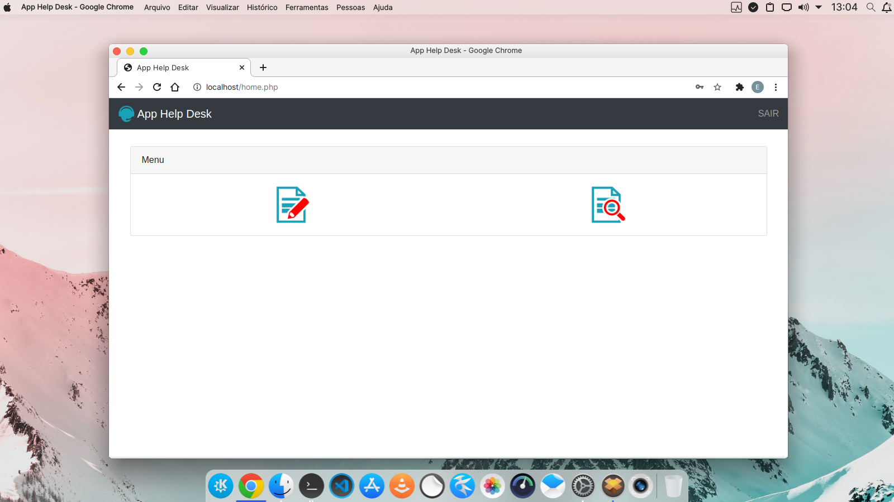
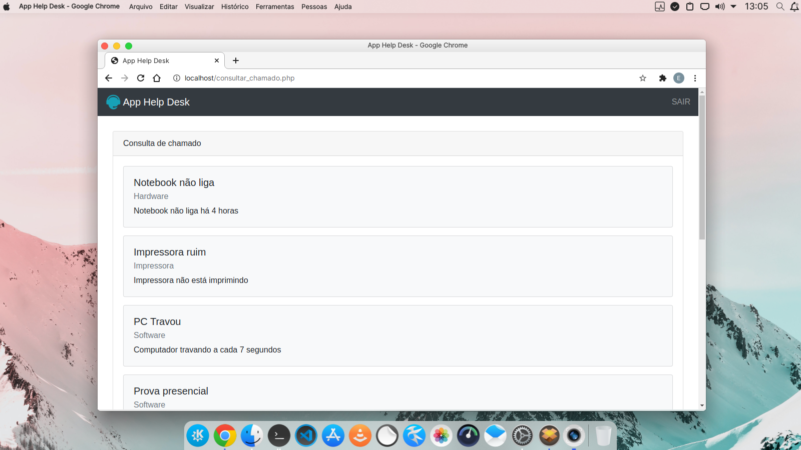
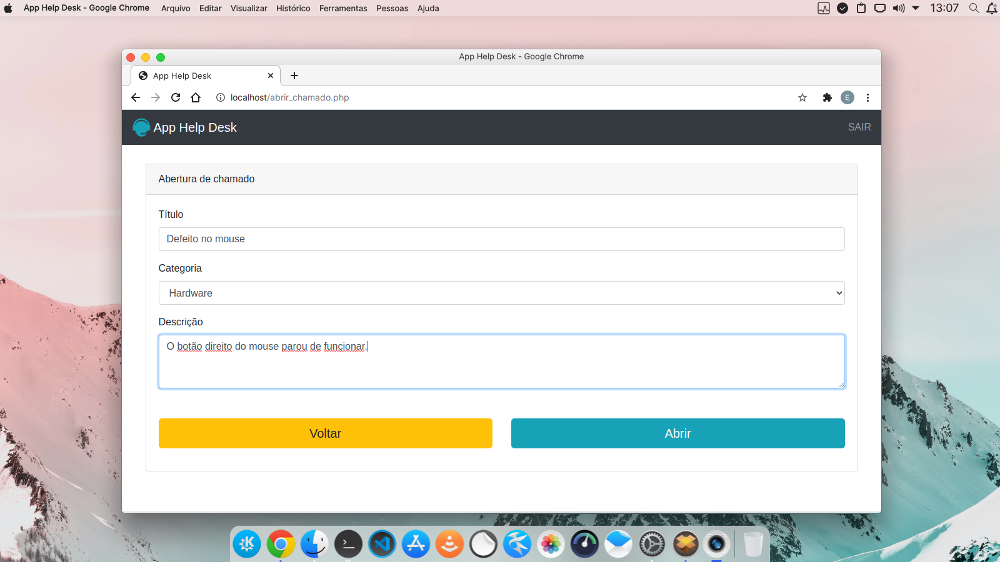
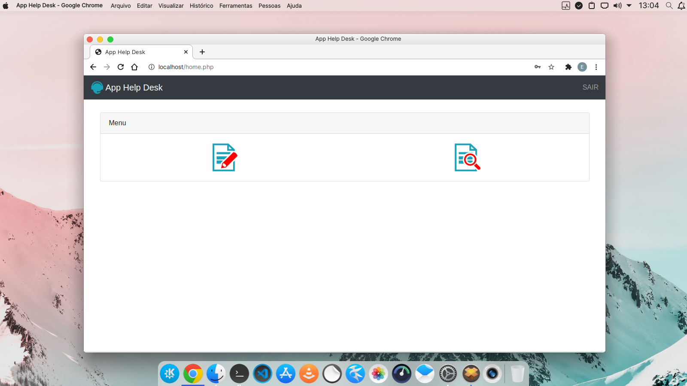
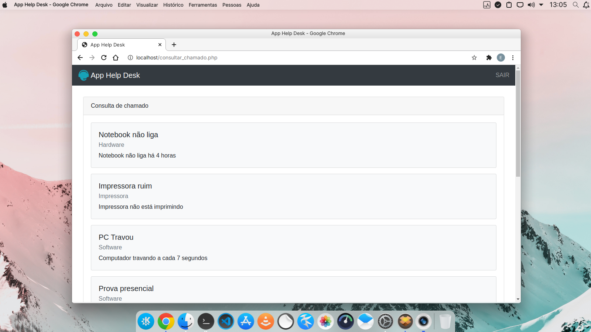
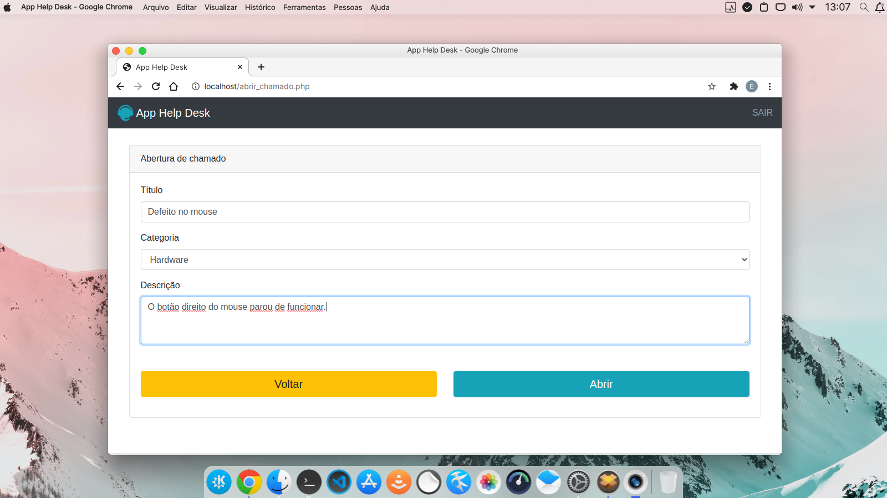

Projeto criado durante o curso de Desenvolvimento Web.
O projeto foi desenvolvido com o objetivo de colocar em prática todos os conhecimentos adquiridos até o momento.
Para utilizar o site, o usuário precisa estar logado na plataforma. Qualquer usuário logado pode abrir chamados para o help desk.
 




